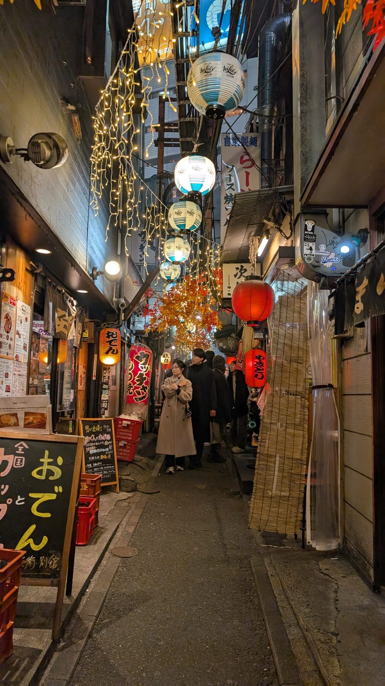

I Was Waiting for Ramen in a Tokyo Alley. That's How This App Was Born.
Drafted with AI assistance — Claude Code, fittingly — and reviewed by the founder.

It was early this year. Tokyo, a winter evening, and I was hungry.
No plan, no reservation. I just wandered until I found a narrow alley — barely wide enough for two people to pass — lined with tiny restaurants on both sides. Red lanterns. The smell of grilled skewers and broth. A chalkboard sign out front. A short queue at every door.
I joined the line for ramen. Put in my AirPods. And while I waited, I opened an app, tapped the spot where I was standing, and a voice started talking.
It told me the story of this alley. How these small stalls had survived since just after World War II. How the whole stretch had somehow remained untouched while the city rebuilt itself around it. I was standing in a piece of living history, and I almost walked right past it.
That ten minutes in the queue changed something for me.
The App I Wanted Before I Even Built It
Before the Japan trip, I had this idea nagging at me.
I wanted something that could tell me the story of any place — not just the famous ones. The Philosopher's Path in Kyoto, yes. But also the university cafeteria. The bridge I crossed twice a day. The quiet corner that didn't show up in any guidebook.
Not a scripted tour. Not a series of pre-recorded tracks I had to download and sync and follow in order. Something more like a local friend walking next to me, who happened to know everything — ready to share a story whenever I asked, and quiet when I didn't.
And here's the thing: I didn't want to be staring at my phone the whole time. When you travel to see the world, you should actually see it. AirPods in, phone in pocket, eyes on the street. One ear free, one ear listening.
A Fast Prototype, Thanks to Claude Code
I'd been messing around with AI coding tools for a while by then — Cursor, then GitHub Copilot — without quite finishing anything real. Then I started using Claude Code, and prototyping got fast enough that I actually shipped something in time for the trip.
It wasn't polished. But it worked: open the map, tap a place, hear a story. That was enough to take to Japan.
Ten Days. Dozens of Stories.
Over the next ten days, I listened to places I never would have thought to research.
Omoide Yokocho — the alley where this whole thing started — turned out to be a well-known survivor from postwar Tokyo, a yokocho (alley of small bars and eateries) that locals and travelers have cherished for decades. I would have eaten my ramen and moved on, none the wiser.
Kyoto University's cafeteria. The Philosopher's Path, a canal-side walkway named after a professor who walked it every day for decades while thinking through ideas that shaped modern Japanese philosophy. A small shrine tucked between two convenience stores.
Place after place, the app gave me context I wasn't looking for but was glad to have.
Why I Finished It
Back home in the US, I had a working app and a clear sense of who it was for.
Not everyone. Not the traveler collecting photos for an Instagram grid. Not the person who needs a checklist of must-see monuments.
The person I had in mind is someone who travels to absorb things. Who lingers. Who wants to understand a place, not just document that they were there. Who might be alone, or with a partner, but either way is fully present.
That person deserved a better tool than what existed. So I kept building.
The Prototype Was a Compromise. Tour Mode Wasn't.
That first version — the prototype I built with Claude Code before the trip — was tap-based. Open the map, tap a place, hear a story. It worked, but it wasn't quite the thing I'd described to myself: a local friend walking next to me, quiet when I didn't need them, ready to talk when I did. Tapping a screen every few minutes was still a screen habit, even if a lighter one than most travel apps ask for.
Tour Mode is the version of that idea I actually wanted in the ramen line. Put your headphones on, put your phone away, and just walk — CityYoYo finds and narrates nearby places on its own, no tapping at all. A tap on your AirPods skips ahead, two pauses it, three skips past a place that doesn't interest you. Tell it you care more about architecture than nightlife and it'll lean that way without you asking twice. Live captions follow along if you want to glance down, and it keeps playing in the background with lock-screen controls, so it just... stays out of the way.
What CityYoYo Is Now
CityYoYo is a free audio city guide for iOS and Android, with two ways to use it. Tour Mode narrates hands-free as you walk, the way I wished I could in that alley. Explore Mode is the original idea, refined: tap any place on the map, hear a narration — on the spot, in your language, no pre-recorded scripts — for whenever you'd rather browse than walk.
It works in 6 languages. It has offline city packs for when you don't have signal. You can read instead of listen. You can customize the voice. You can even write a custom prompt so the app knows you care more about architectural history than nightlife.
It's free to download.
If you've ever stood somewhere and wondered — what happened here? — this app is for you.